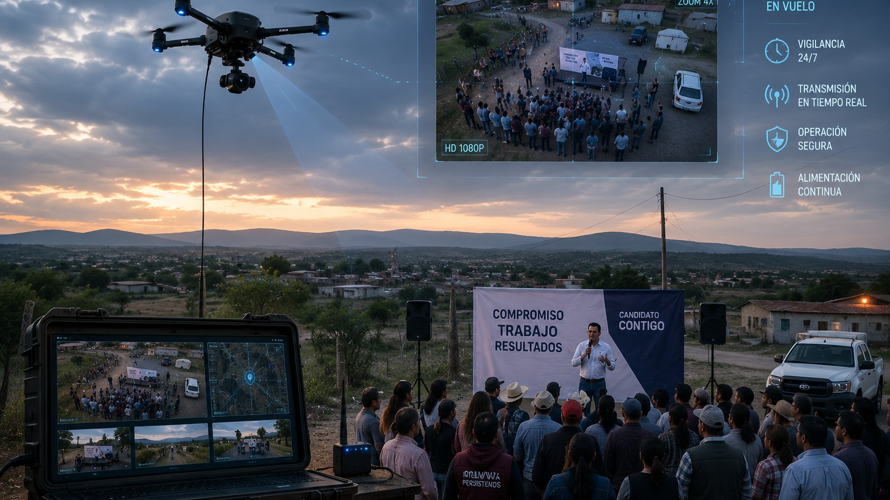
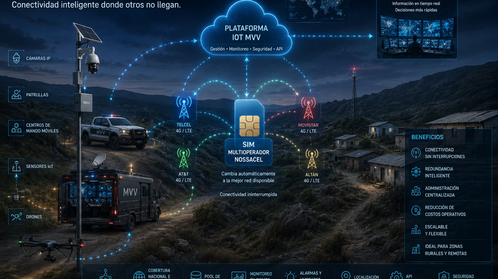
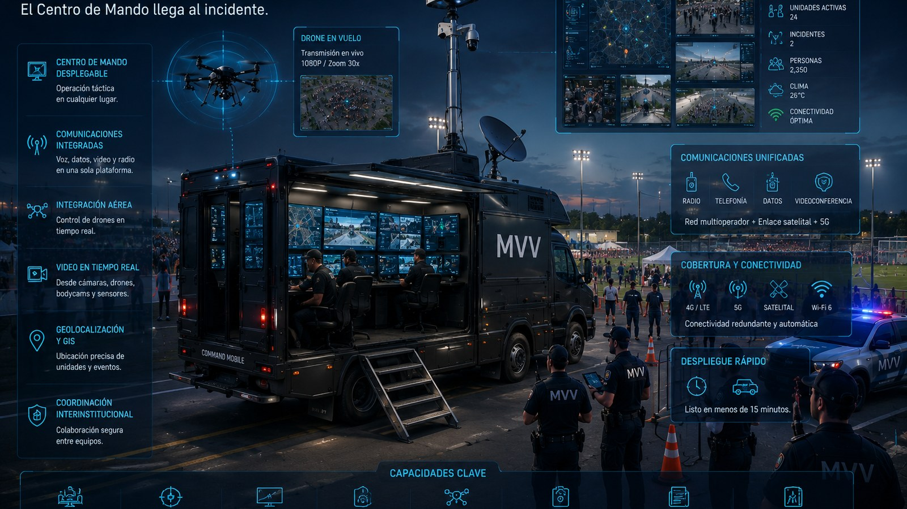
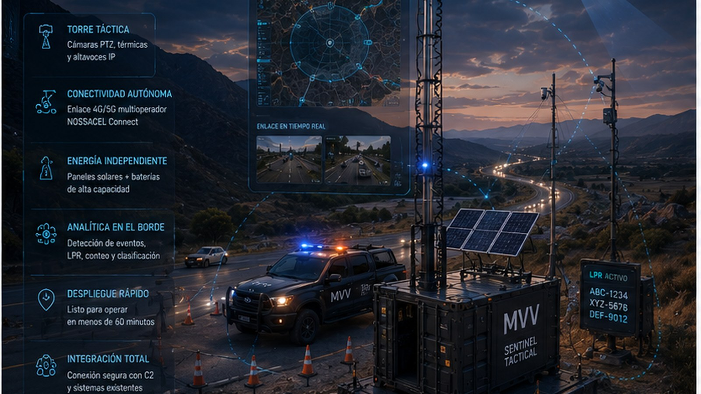
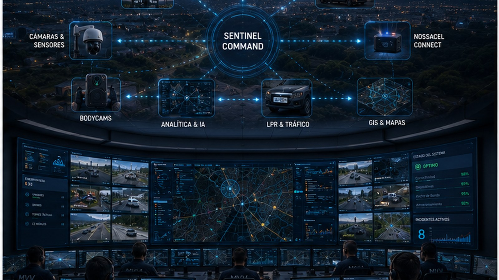

Infraestructura crítica
Diseño e integración de soluciones para entornos estratégicos.
Soluciones tecnológicas, capacidades operativas, ingeniería y servicios profesionales para infraestructura crítica, seguridad pública y operaciones que no pueden detenerse.
MVV diseña, integra, implementa y mantiene ecosistemas tecnológicos para organizaciones donde la disponibilidad, la coordinación y la respuesta son críticas.
Diseño e integración de soluciones para entornos estratégicos.
Centros de comando, monitoreo y coordinación operativa.
CCTV, arcos lectores y detección de velocidad.
Fibra óptica, conectividad resiliente e integración multimarca.
Preventivo, correctivo, soporte técnico y renovación tecnológica.
NOC, SLA, mesa de ayuda y acompañamiento especializado.
El cliente puede adquirir una solución especializada o evolucionar hacia una capacidad operativa integral.
Disponibles de forma independiente.

Observación aérea persistente.

Comunicaciones críticas y conectividad operativa.

Centro de comando móvil.
Integración completa respaldada por Servicios Profesionales MVV.
Observación, conectividad y despliegue táctico.
De la observación táctica a la coordinación integral.
La siguiente evolución de MVV hacia plataformas de inteligencia, analítica, automatización y coordinación avanzada para infraestructura crítica y seguridad pública.
Precios de referencia conforme a la propuesta comercial vigente. Las configuraciones pueden ajustarse al alcance, condiciones del sitio y requerimientos operativos del proyecto.
La tecnología adquiere valor cuando está correctamente diseñada, integrada, implementada y respaldada.
Necesidades, riesgos, cobertura y arquitectura.
Diseño, dimensionamiento e integración multimarca.
Suministro, instalación, configuración y pruebas.
Entrenamiento operativo y transferencia de conocimiento.
Mesa de ayuda, preventivo, correctivo y refacciones.
NOC, SLA, modernización y crecimiento por etapas.
Documentación oficial de soluciones tecnológicas y capacidades operativas.
Documentación técnica de las soluciones tecnológicas MVV.
Plataforma aérea autónoma para vigilancia y coordinación operativa.
Comunicaciones inteligentes para infraestructura crítica.
Centro de comando y control móvil para operaciones críticas.
Documentación oficial de capacidades operativas MVV.

Vigilancia temporal e infraestructura crítica.

Mando, control y coordinación operativa integral.
Información técnica y comercial de referencia.
Diseñemos una solución alineada con sus necesidades operativas, técnicas y presupuestales.